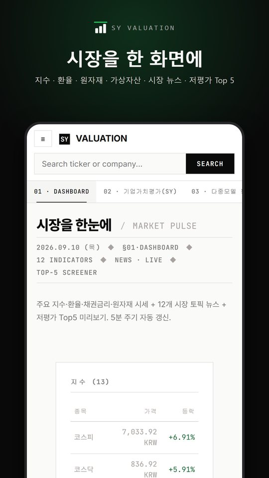
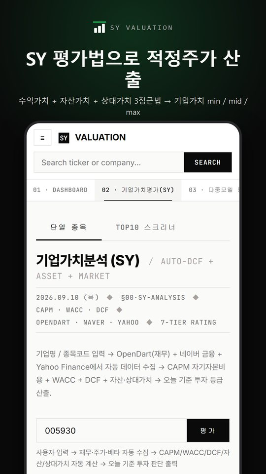
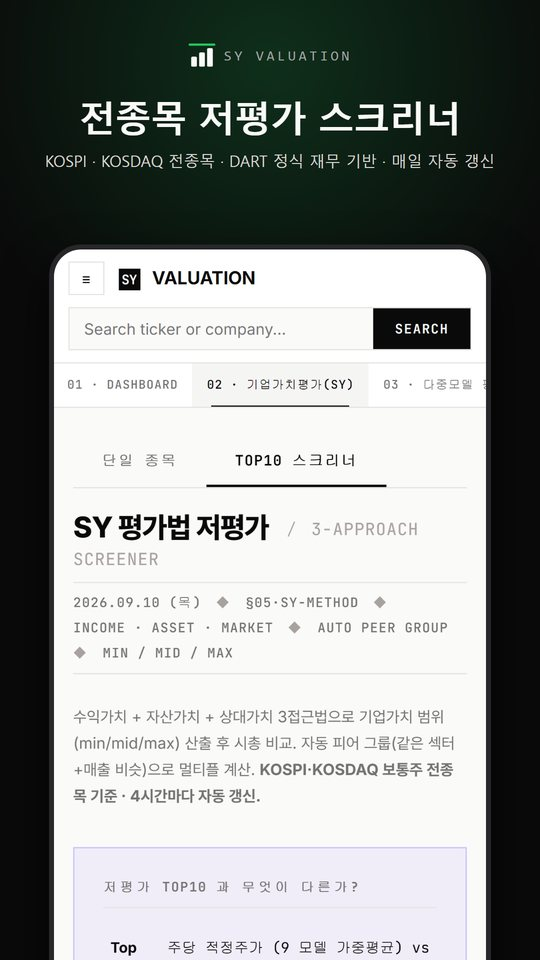
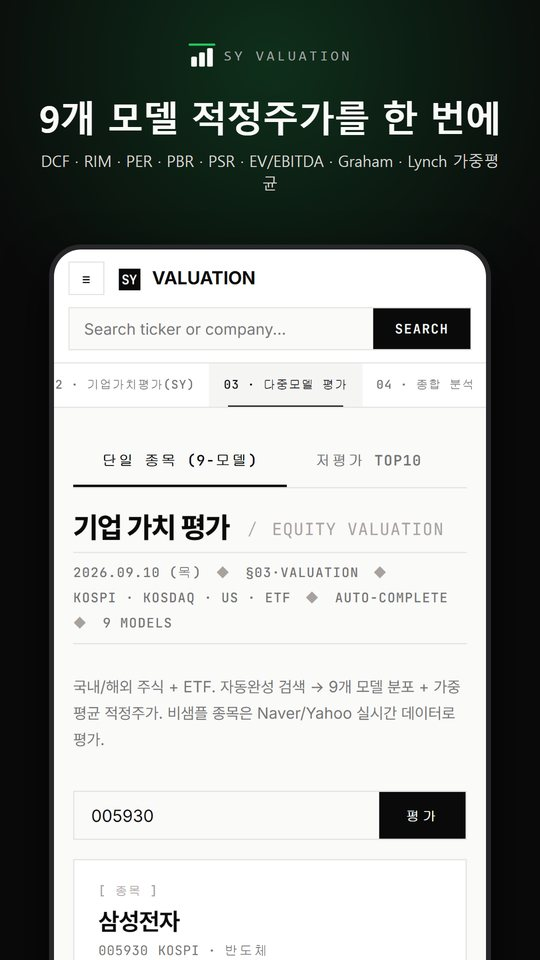
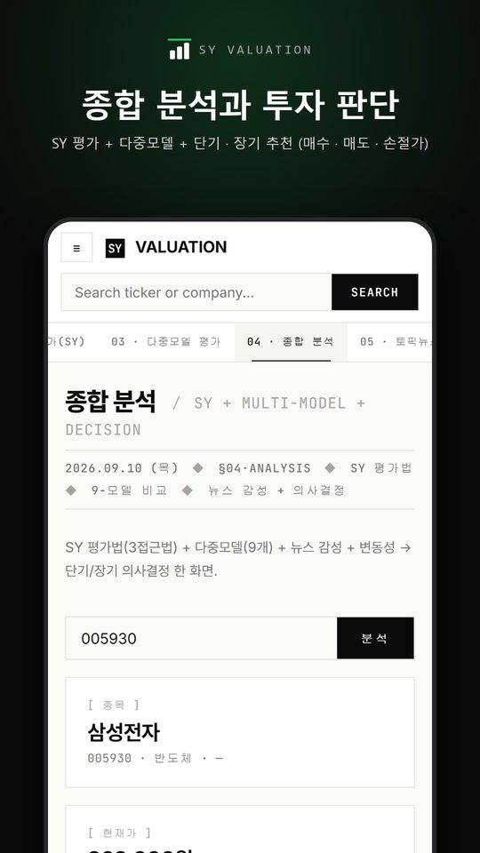
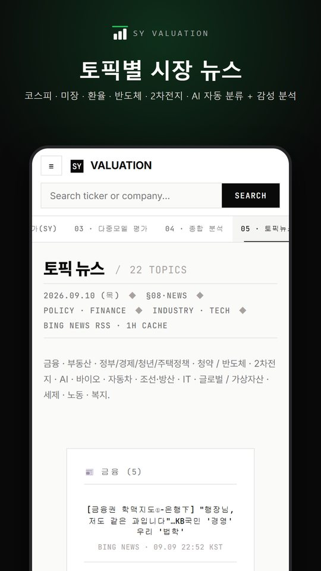
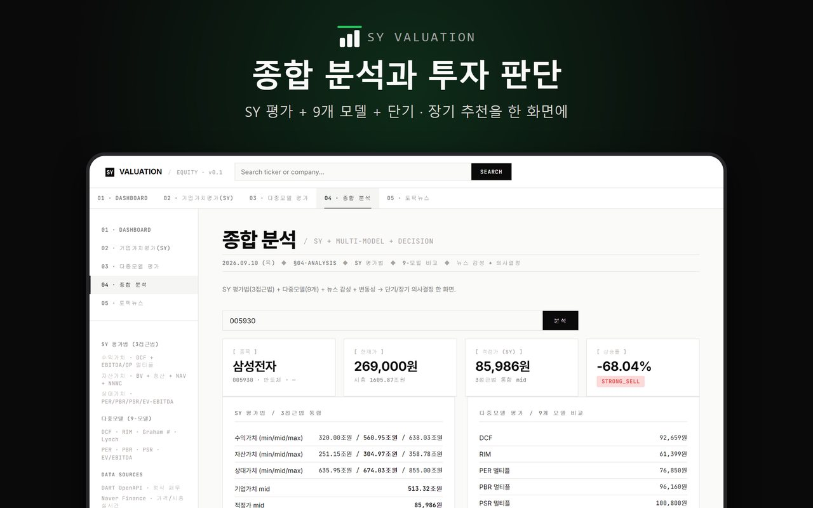
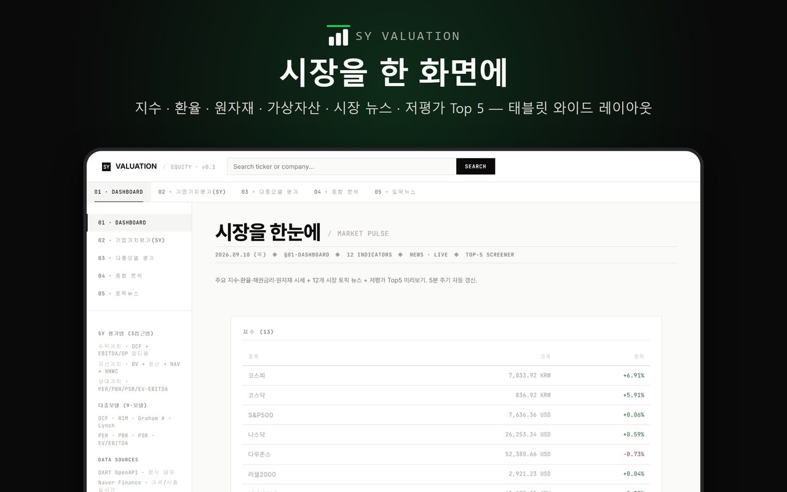
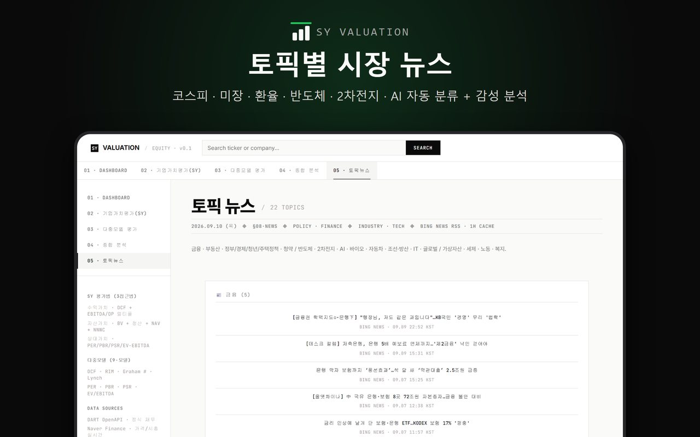

← 포트폴리오/Project 01
Project 01 · Financial Quant Architecture
SY Valuation — 3접근법·9모델 기업가치평가 시스템
종목 하나를 입력하면 재무·주가·베타를 자동으로 모아 수익가치 + 자산가치 + 상대가치 3접근법으로 기업가치 범위(min / mid / max)를 계산하고, 9개 모델의 적정주가와 뉴스 감성을 더해 투자 판단까지 한 화면에 보여 주는 개인 프로젝트입니다.
00 · Background
왜 만들었나 — 실무 경험을 하나의 엔진으로
교보 디플래닉스 재직 시절 기업가치평가시스템을 구축한 경험과 FinTech MBA에서 다진 재무 데이터 역량을, 혼자 설계·구현하는 금융 퀀트 아키텍처로 다시 묶었습니다.
실무에서 가져온 것
- 기업가치평가시스템 구축 경험 — 평가 절차를 시스템 단계로 나누는 방식
- 재무 데이터 역량(FinTech MBA) — CAPM·WACC·DCF·RIM 같은 평가 모델과 멀티플 해석
- ERP 설계 경험 — 데이터 출처를 고정하고 계산 단계를 추적 가능하게 두는 습관
개인 앱으로 새로 설계한 것
- 입력 한 번으로 데이터 수집부터 투자 등급까지 자동으로 이어지는 파이프라인
- 점 추정이 아닌 범위(min / mid / max)로 보여 주는 기업가치
- 단일 모델 의존을 줄이는 9개 모델 분포 + 가중평균
- 밸류에이션에 뉴스 감성·변동성을 더한 단기 / 장기 의사결정 화면
01 · Architecture
시스템 아키텍처 — 수집 · 평가 · 판단의 세 층
데이터 출처마다 역할을 하나씩 맡기고(정식 재무는 DART, 가격·시총은 실시간 시세), 평가 엔진은 두 갈래로 계산한 뒤 판단 층에서 합칩니다.
← 좌우로 밀어서 보기 →
주황 = 판단에 직접 쓰이는 출력과 뉴스 신호. 점선 = SY 3접근법 엔진 경계.
02 · Valuation Logic
평가 로직 — 입력 한 번에서 투자 등급까지
사용자는 기업명이나 종목코드만 넣습니다. 나머지는 정해진 순서대로 계산되고, 각 단계의 입력값과 중간값이 화면에 남아 어떤 숫자가 어디서 왔는지 따라갈 수 있습니다.
① 할인율 — CAPM에서 WACC까지
계산 순서
Re = Rf + β × MRP— 자기자본비용Rd(세후) = Rd × (1 − Tc)— 타인자본비용E= 시가총액,D= 순부채(차입금 − 현금),V = E + DWACC = E/V × Re + D/V × Rd × (1 − Tc)
입력값과 출처
- Rf 무위험이율 — 한국은행 국채 3년
- β 베타 — Yahoo Finance
- MRP 시장위험프리미엄 — KOSPI 5년 평균(기본 4.75%)
- Tc 세율 — DART 실제값, 없으면 법인세 기본율 22%
② 수익가치 — FCFF 기반 10년 DCF
FCFF = EBIT × (1 − Tc) + 감가상각비 − CapEx − Δ운전자본
기업가치 = Σ FCFFt ÷ (1 + WACC)t + TV ÷ (1 + WACC)10, TV = FCFF10 × (1 + g) ÷ (WACC − g)
1~5년은 단기 성장률, 6~10년은 장기 성장률, 이후는 영구 성장률을 씁니다.
| 시나리오 | 단기 (1~5년) | 장기 (6~10년) | 영구 g |
|---|---|---|---|
| 보수적 | 2.5% | 2.0% | 2.0% |
| 기본값 | 5.0% | 3.0% | 2.5% |
| 적극적 | 10.0% | 5.0% | 3.0% |
③ 3접근법 — 각자 범위를 만들고 합친다
| 접근법 | 구성 방법 | min | mid | max |
|---|---|---|---|---|
| 수익가치 | DCF + EV/EBITDA 멀티플 + 영업이익 멀티플 | 세 값 중 최소 | 중앙값 | 최대 |
| 자산가치 | 순자산(자산총계 − 부채총계) + 청산가치(순자산 × 0.7) | 청산가치 | 두 값의 평균 | 순자산 |
| 상대가치 | PER · PBR · PSR · EV/EBITDA × 피어 평균 (EV/EBITDA는 순부채를 빼 지분가치로 환산) | 양수 값 중 최소 | 중앙값 | 최대 |
평균 대신 중앙값을 mid로 쓴 것은, 한 모델이 튀는 값을 내도 결과가 끌려가지 않게 하려는 선택입니다. 음수가 나온 상대가치 모델은 범위에서 뺍니다.
④ 투자 판단 — 7단계 등급
상승률 = (기업가치 − 시가총액) ÷ 시가총액
| 상승률 | 등급 |
|---|---|
| +30% 이상 | STRONG_BUY |
| +15 ~ +30% | BUY |
| +5 ~ +15% | ACCUMULATE |
| −5 ~ +5% | HOLD |
| −15 ~ −5% | REDUCE |
| −30 ~ −15% | SELL |
| −30% 미만 | STRONG_SELL |
03 · Validation & Fallback
검증과 예외 처리 — 숫자를 믿을 수 있게
무료 공개 데이터는 계정이 비거나 이름이 조금씩 다릅니다. 계산보다 먼저, 들어온 데이터와 나온 결과가 말이 되는지 확인하는 단계를 두었습니다.
검증 규칙
| 검사 | 기준 | 벗어나면 |
|---|---|---|
| 재무상태표 균형식 | 자산 = 부채 + 자본, 오차 1% 이내 | 불일치 경고 |
| FCFF 합리성 | 양수 · 영업이익의 1.5배 미만 · 매출의 50% 미만 | 검토 필요 표시 |
| 피어 멀티플 | 내 PER · PBR이 피어 평균의 0.5~2.0배 | 멀티플 이상 경고 |
| 3접근법 편차 | 최대값 ÷ 최소값 차이가 2배 이하 | "추가 검토 필요" 알림 |
| WACC 범위 | 업종별 정상 범위 (예: 반도체 8~12%, 금융 5~7%) | WACC 이상 경고 |
데이터가 비었을 때 — 대체값과 표시
대체값 규칙
- 감가상각비 없음 → 영업이익 × 5%
- CapEx 없음 → 감가상각비 × 0.8
- 운전자본 증감 없음 → 0
- 베타 없음 → 1.0, 세율 없음 → 22%
사용자에게 숨기지 않는다
- 대체값을 쓴 항목은 "추정" 표시와 함께 이유를 알림으로 보여 줌
- 데이터 상태를 정상 · 주의 · 오류 · 추정 네 가지로 구분
- DART 오류 코드(권한 없음 · 공시 없음 등)를 구분해 안내
04 · Product Structure
5개 메뉴 구성
시장 → 종목 평가 → 모델 비교 → 의사결정 → 뉴스 순서로, 투자 판단의 흐름을 그대로 메뉴로 옮겼습니다.
| # | 메뉴 | 하는 일 | 데이터 · 갱신 |
|---|---|---|---|
01 | Dashboard — 시장을 한눈에 | 주요 지수 · 환율 · 채권금리 · 원자재 · 가상자산 시세, 시장 토픽 뉴스, 저평가 Top5 미리보기 | 5분 주기 자동 갱신 |
02 | 기업가치평가(SY) — 단일 종목 / Top10 스크리너 | 3접근법으로 기업가치 범위 산출, KOSPI·KOSDAQ 보통주 전종목 저평가 순위 | DART 정식 재무 · 스크리너 4시간마다 |
03 | 다중모델 평가 | 국내 · 해외 주식 + ETF, 자동완성 검색 → 9개 모델 분포와 가중평균 적정주가 | 비샘플 종목은 Naver / Yahoo 실시간 |
04 | 종합 분석 — 투자 판단 | SY 평가 + 9모델 비교 + 뉴스 감성 + 변동성 → 단기 · 장기 의사결정 한 화면 | — |
05 | 토픽 뉴스 | 금융 · 부동산 · 정책 · 반도체 · 2차전지 · AI 등 22개 토픽 자동 분류 + 감성 분석 | Bing News RSS · 1시간 캐시 |
05 · Screens
구동 화면
2026-09-10 기준 실제 구동 화면입니다. 폰 · 태블릿에서 같은 메뉴 구조를 유지합니다.
Google Play 비공개 테스트 트랙 등록
Google Play Console에 com.sy.valuation(Sy Value)로 등록해 비공개 테스트(Closed testing) 단계로 운영 중입니다. 공개 출시 전, 초대한 테스터 대상으로 실기기 검증을 하고 있습니다.






태블릿 (10인치)


